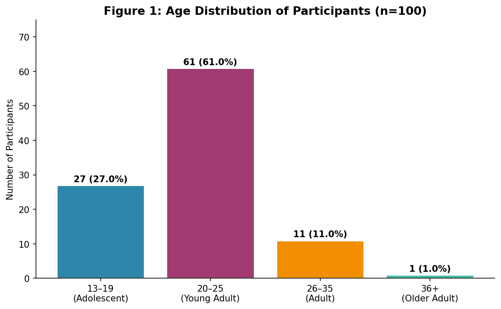
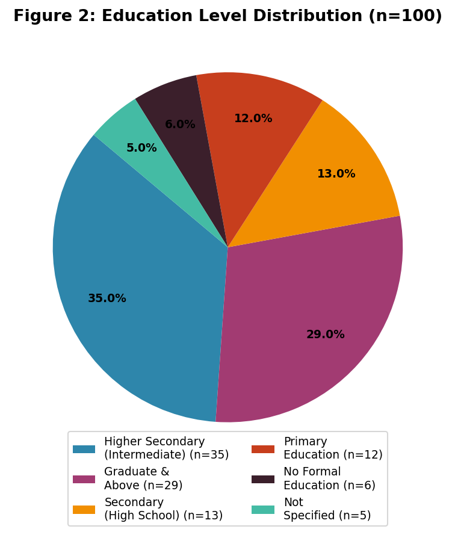
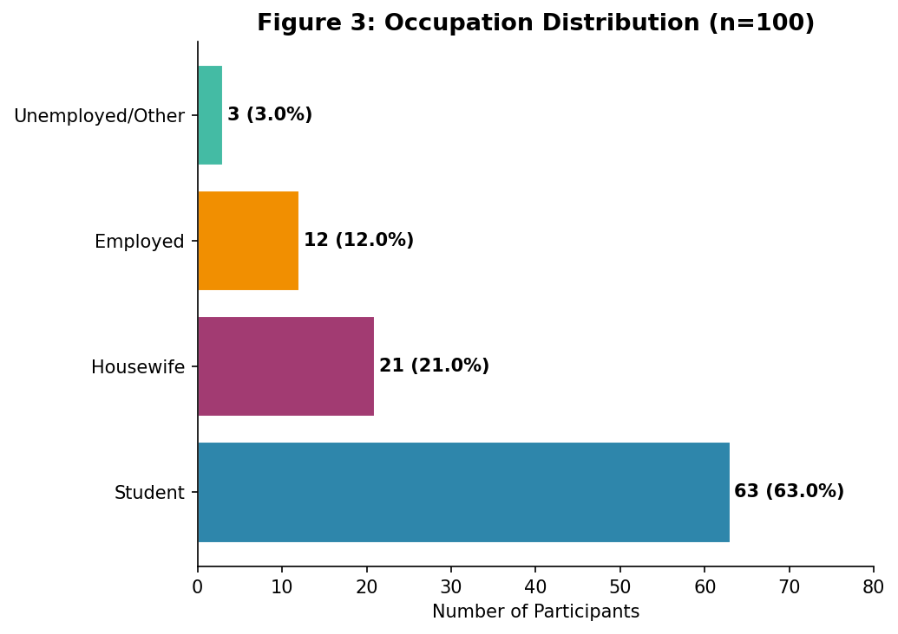
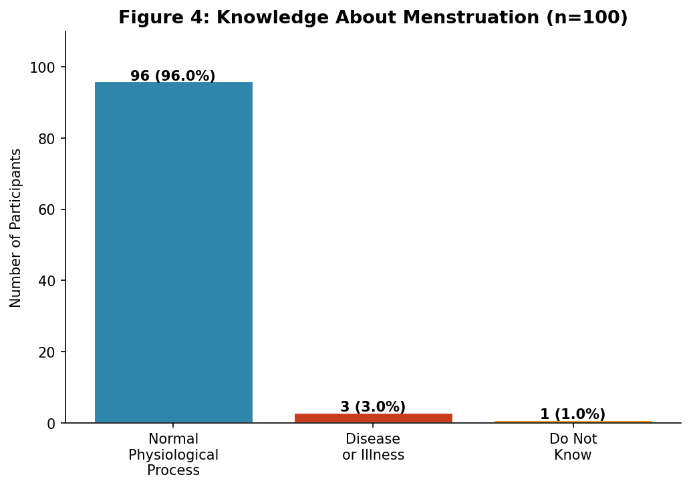
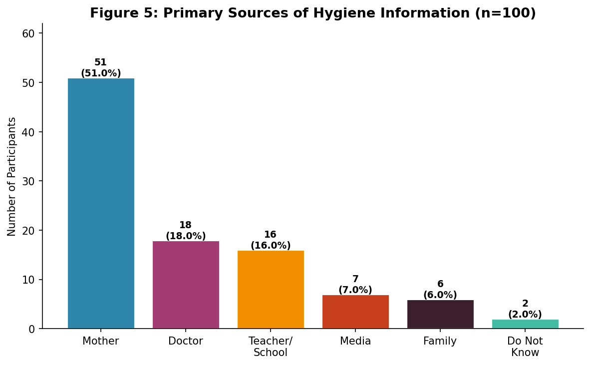
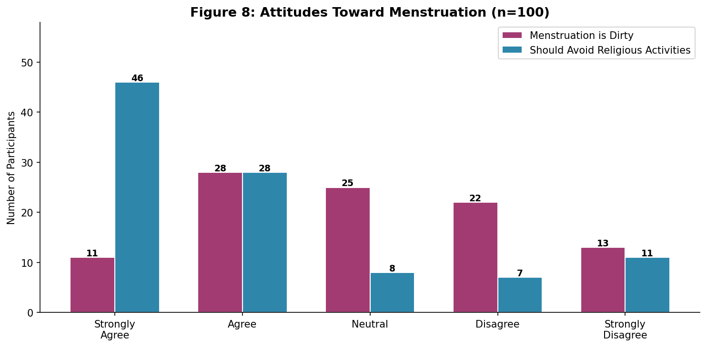
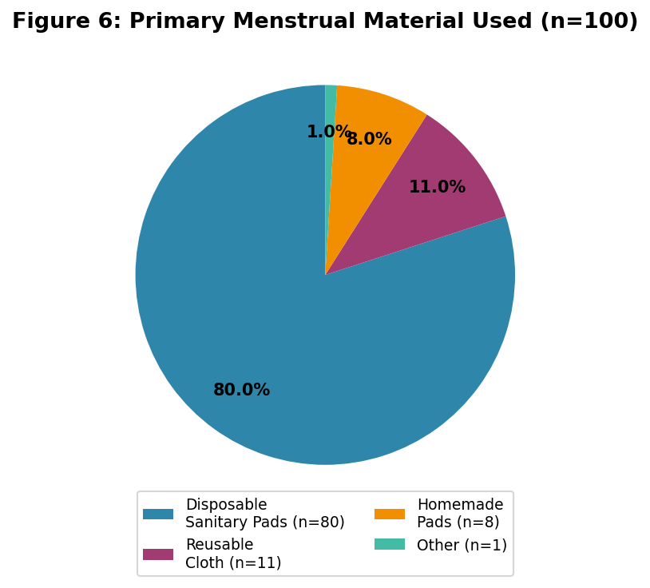
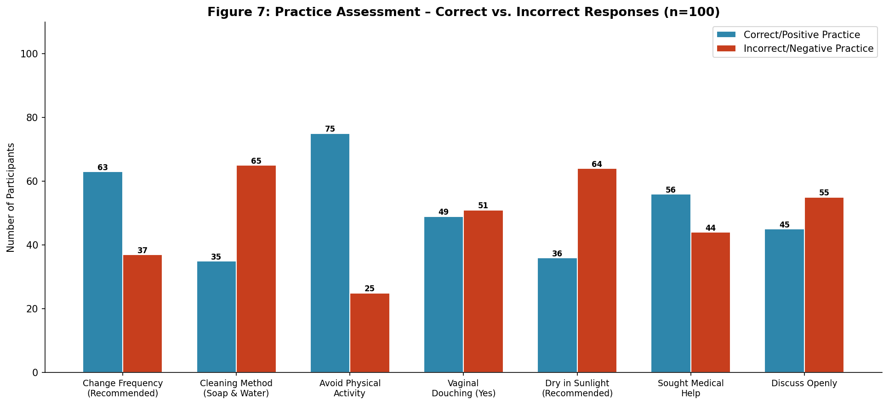
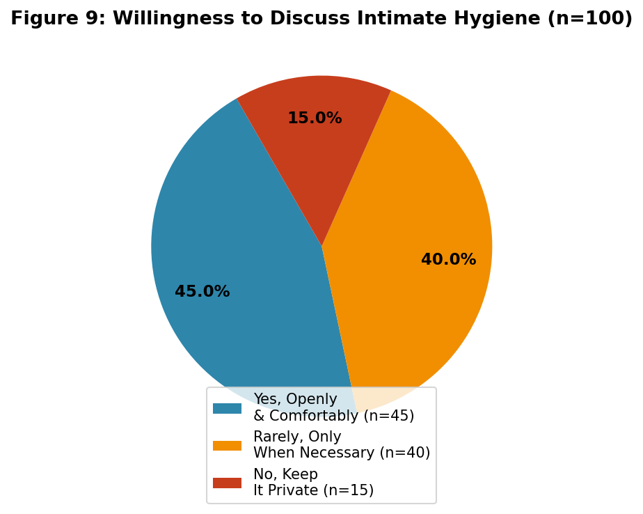

I, Atiya Hassan, hereby declare that the dissertation titled "Intimate Hygiene Practices Among Women in Jamshoro: A Comparative Study Based on Education Level", which I have submitted, is entirely the result of my own work. Every effort has been made to indicate this clearly, with due reference to the literature. The contents of this thesis, in full or in parts, have not been submitted to any other Institute or University for the award of any other degree or diploma.
This work was carried out under the supervision and guidance of Mr. Muhammad Zakarya, Nursing Instructor, Liaquat College of Nursing Female, LUMHS, Jamshoro.
Place: Liaquat College Of Nursing Female, Jamshoro
Date:
Name: Atiya Hassan
Signature:
This is to certify that Atiya Hassan has completed this research work titled "Intimate Hygiene Practices Among Women in Jamshoro: A Comparative Study Based on Education Level" as a research scholar under my supervision and guidance, for the partial fulfillment of the requirements for the degree of Bachelor of Science in Nursing at Liaquat College of Nursing Female, Jamshoro.
The research work is original, and the student has demonstrated satisfactory scholarly aptitude in conducting and presenting this study.
Supervisor's Name:
Muhammad Zakarya
BSN, MSN(In Progress), Nursing Instructor, Liaquat College of Nursing Female, LUMHS, Jamshoro
Signature:
Date:
All praises and thanks are due to Almighty Allah, the Most Beneficent and the Most Merciful, who bestowed upon me the wisdom, strength, and determination to complete this research work successfully.
I would like to express my deepest and most heartfelt gratitude to my esteemed supervisor, Mr. Muhammad Zakarya, whose exceptional mentorship, profound knowledge, and tireless dedication have been the guiding light throughout this entire research journey. His scholarly expertise, insightful feedback, and remarkable patience at every stage of this thesis from the initial concept to the final manuscript were truly invaluable. It was his constant encouragement, constructive criticism, and unwavering belief in my abilities that made the successful completion of this work possible. I consider myself truly fortunate to have worked under the supervision of such a distinguished and inspiring mentor.
I owe a deep debt of gratitude to my loving parents, whose prayers, sacrifices, and unwavering moral support have been my greatest strength. I am equally grateful to all the participants who generously gave their time and candidly shared their experiences during data collection, without whom this study would not have been possible.
Special thanks to Mr. Afzal Khan, BS Computer Science (University of Sindh, Jamshoro), for his valuable technical assistance with statistical analysis and manuscript preparation.
Lastly, I am sincerely thankful to all my dear friends and well-wishers who stood by me, encouraged me, and believed in me at every step. May Allah bless you all.
Background: Women's intimate hygiene especially during menstruation is shaped by how much education they have, what their mothers told them, and what the local culture allows them to say out loud. In Sindh, Pakistan, very little local data exists on this topic, which means healthcare planners are working with guesswork rather than facts.
Objective: This study set out to describe what women in Jamshoro actually know, believe, and do regarding intimate hygiene and to see whether education level makes a measurable difference in their practices.
Methods: We used a descriptive cross-sectional design. One hundred women filled out a structured online questionnaire covering four areas: demographics, knowledge, attitudes, and practices. One hundred responses were valid and included in the analysis (one excluded due to a data recording error).
Results: Most participants were between 20 and 25 years old (61.6%), and the majority were students (63.0%). Knowledge of menstruation as a normal process was high 96.0% got this right. But practice was another story. Four in ten women (41.0%) believed they should not bathe during their period. Around half (50.0%) reported using vaginal douching at least sometimes. Mothers were the main source of hygiene knowledge for 51.0% of participants. And 74.0% agreed that religious activities should be avoided during menstruation.
Conclusion: Basic awareness about menstruation exists, but actual hygiene behavior has serious gaps particularly avoidance of bathing, douching, and infrequent pad changes. These habits carry real infection risks. The findings point clearly toward the need for school-level and community-based health education, especially targeting the households where mothers pass on outdated practices.
Women's intimate hygiene which covers how they manage menstruation, clean themselves, and seek care for related problems has a direct bearing on reproductive health. When hygiene practices are poor, the consequences are not abstract. Reproductive tract infections, urinary tract infections, and fungal problems become more likely. And beyond the physical harm, there is the social burden: the shame, the silence, the girls who stay home from school because they have no clean pad to use.[1]
Worldwide, roughly 500 million women and girls lack proper access to menstrual hygiene facilities. In
Pakistan and particularly in rural Sindh the situation is made worse by cultural taboos that turn
menstruation into something one never talks about openly. This silence is not harmless. It means girls grow
up learning from their mothers and neighbors rather than from nurses or teachers, and those informal lessons
often carry myths alongside genuine care.[2]
Things like: do not bathe during your period. Use an old cloth and hide it under your mattress to dry. Do
not exercise. These are not unusual beliefs in Sindh they are common ones, passed down with love but
causing harm.
Education is probably the single biggest factor that changes this. Women who have studied longer tend to know more about safe pad use, how often to change, and why douching is harmful. In a study comparing urban and rural girls in Khairpur, Sindh, girls from towns showed 69.8% satisfactory knowledge of menstrual hygiene while girls from villages managed only 39.0%. In terms of actual practices, the gap was even starker 71% good practice in urban areas versus a mere 12% rurally.[4] That difference is not small. It represents a real risk difference for infection and illness.
Jamshoro is a telling setting for this kind of study. Agriculture is the main livelihood here. Female literacy in the surrounding rural pockets sits somewhere between 40 and 50 percent.[5] And yet, very few studies have looked specifically at Jamshoro women their hygiene habits, their sources of knowledge, what they believe about menstruation. This study tries to fill a small part of that gap.
Most Pakistani research on menstrual hygiene targets schoolgirls which makes sense, because schools are easy data collection sites. But this leaves out a large portion of women: the housewives, the early school leavers, the employed women in their twenties who were never formally studied. In Sindh specifically, the role of religion and culture in shaping menstrual behavior has not been systematically examined in local, quantitative studies.[6] Our study covers a broader age and occupational range and includes attitude questions that directly address cultural and religious beliefs about menstruation.
The specific objectives of this study were to:
Looking through the available research, a few patterns repeat themselves almost everywhere: women with less education have worse hygiene practices, mothers are the dominant source of menstrual information (for better or worse), and cultural beliefs about impurity during menstruation run deep regardless of how much someone actually knows about biology. Intimate hygiene is not just about menstruation either. It includes daily genital care, how one cleans during pad changes, whether vaginal douching is a habit, and whether women feel comfortable enough to see a doctor when something is wrong.[1]
One particularly telling study from Khairpur, Sindh, compared urban and rural girls on both knowledge and practice. Urban girls scored 69.8% on satisfactory knowledge rural girls scored just 39.0%. When it came to actual daily habits, 71% of urban participants practiced hygiene correctly versus only 12% in rural areas.[4] The reason? Rural areas had lower maternal literacy, so mothers had less to teach. In those communities, formal schooling was also less available, which meant girls had almost no alternative channel for correct information. A parallel finding came from Chitral, where educated women knew four times more than illiterate ones 49% versus 13%.[7]
The situation in some rural Pakistani districts is quite difficult. In Matiari, three out of four young women were using old cloths or nothing at all for menstrual absorption. Having no education made this 3.9 times more likely compared to women with any formal schooling.[8] In Gilgit-Baltistan, more than half the girls had poor menstrual knowledge, nearly half used reusable cloth, and girls whose parents were uneducated were significantly more anxious and more likely to avoid exercise and social activities during menstruation.[9] These are not isolated findings they point to a systemic issue.
Vaginal douching is worth examining separately because it represents a practice that is driven by attitude rather than ignorance. Women who douche typically believe they are being clean. In Turkey, 28.6% of lower-educated women douched regularly, even though research clearly shows it disrupts vaginal pH and increases infection risk.[2] This is the challenge: telling someone their cleanliness ritual is actually harmful is not easy, and it requires a different approach than simply giving information.
What the literature makes clear is this: education improves hygiene knowledge, and knowledge somewhat improves practice but culture and attitude often override both. The mother-to-daughter transmission of menstrual information is the strongest pattern in Pakistani studies. When mothers have wrong information, daughters inherit it. School teachers and healthcare providers reach far fewer girls. What this means practically is that any intervention that wants to change menstrual hygiene behavior in places like Jamshoro must work on two levels at once changing what women know AND what they believe. This study contributes local data from Jamshoro to help understand where that work is most needed.
We used a descriptive cross-sectional study design. This is a standard approach for documenting the prevalence of KAP (knowledge, attitudes, practices) in a population at a given point in time it does not track changes over time, but it gives a reliable snapshot of where things stand.
Data collection took place during February and March 2026 in Jamshoro District, Sindh. Participants came from urban and semi-urban parts of the district. The questionnaire was shared as a Google Form through social media contacts, nursing college networks, and through community connections. This approach reaches a wider group faster than in-person visits though it does mean the sample skews toward women who have smartphone access.
One hundred women submitted responses. However, one entry had to be excluded the age field was entered as a letter rather than a number, making it impossible to classify. The final sample used in all analysis was therefore n = 100. All participants were females aged 13 years or above, living in Jamshoro or nearby areas, and had agreed to take part voluntarily.
The questionnaire was organized into four parts, each addressing a different dimension of the topic:
Informed consent was built into the very first screen of the form respondents had to confirm they agreed before any questions appeared. No names, phone numbers, or email addresses were collected. Participation was entirely voluntary; women could stop at any point. The study followed the general principles of the Declaration of Helsinki for research involving human subjects.
Responses were downloaded from Google Forms as a CSV file. The data were analyzed using Python (pandas library) for frequency counts and percentages, and IBM SPSS Version 23 for cross-tabulation. One response with a non-numeric age was dropped before any analysis began. Results are reported as frequencies and percentages throughout.
The final dataset contained 100 complete and valid responses. Table 1 shows the breakdown of who these women were. The largest group 61.6% fell in the 20 to 25 year age bracket, with a mean age of 21.4 years. The youngest participant was 13 and the oldest was 36. Three out of five were students (63.0%), and around two-thirds had completed at least intermediate-level or higher education. Only 6.0% had no formal schooling at all.
| Variable | Category | Frequency (n) | Percentage (%) |
|---|---|---|---|
| Age Group | 13–19 (Adolescent) | 27 | 27.0% |
| 20–25 (Young Adult) | 61 | 61.0% | |
| 26–35 (Adult) | 11 | 11.0% | |
| 36+ (Older Adult) | 1 | 1.0% | |
| Education Level | No Formal Education | 6 | 6.0% |
| Primary Education | 11 | 11.0% | |
| Secondary (High School) | 13 | 13.0% | |
| Higher Secondary (Intermediate) | 35 | 35.0% | |
| Graduate & Above | 29 | 29.0% | |
| Occupation | Student | 63 | 63.0% |
| Housewife | 21 | 21.0% | |
| Employed (Salaried/Business) | 12 | 12.0% | |
| Unemployed/Other | 3 | 3.0% | |
| Mean Age at Menarche | 13.7 years (range: 12–17, n=94) | ||



Table 2 summarizes what participants knew about intimate hygiene. On the surface, the numbers look positive 96.0% said menstruation is a normal physiological process, which is encouraging. But when we get to specific practice-related knowledge, the story becomes more complicated. Almost half (41.0%) believed that bathing should be avoided during menstruation this is a myth. Bathing during menstruation is not only safe, it is actually more important than usual. And yet four in ten women answered otherwise. Similarly, only 56.0% correctly said that reusable cloths are not safe without proper washing and drying. These are not trivial errors they have direct consequences for health. The main person teaching these women about hygiene? Their mother, in 51.0% of cases.
| Knowledge Item | Correct/Recommended Response | n | % |
|---|---|---|---|
| Menstruation is a normal physiological process | Yes | 96 | 96.0% |
| Recommended cleaning frequency: 2–3 times/day | Two to three times a day | 71 | 71.0% |
| Reusable cloth NOT safe without proper washing/drying | No | 56 | 56.0% |
| Women should NOT avoid bathing during menstruation* | No | 31 | 31.0% |
*41.0% (n=40) incorrectly believe bathing should be avoided a critical knowledge gap.
| Source | Frequency (n) | Percentage (%) |
|---|---|---|
| Mother | 50 | 51.0% |
| Doctor | 18 | 18.0% |
| Teacher / School | 16 | 16.0% |
| Media (TV/Internet) | 7 | 7.0% |
| Family (other members) | 6 | 6.0% |
| Do Not Know | 3 | 3.0% |


The attitude data had some expected and some surprising results. On the question of whether menstruation is dirty or unclean, the group was notably divided 39.0% agreed or strongly agreed that it is, while 35.0% disagreed, and a quarter sat on the fence with a neutral response. What was less divided was the religious angle: a full 74.0% agreed that women should avoid religious activities during menstruation. This is a deeply held belief across much of South Asia and is rooted in religious interpretation rather than simply ignorance. We should be careful not to dismiss this as a misconception for many women, it is a sincere religious practice. But it does shape how they feel about and manage their periods, and that matters for hygiene.
| Attitude Statement | Strongly Agree | Agree | Neutral | Disagree | Strongly Disagree |
|---|---|---|---|---|---|
| Menstruation is a dirty/unclean process | 11 (11.0%) | 28 (28.0%) | 25 (25.0%) | 22 (22.0%) | 13 (13.0%) |
| Women should avoid religious activities during menstruation | 46 (46.0%) | 28 (28.0%) | 8 (8.0%) | 7 (7.0%) | 11 (11.0%) |

The practice data is where things get most interesting. Most women (80.0%) use disposable sanitary pads, which is the safest and most accessible option in an urban or semi-urban setting. And 63.0% change their pad within the recommended 4 to 6 hour window. That part is fairly good. But beneath that headline figure, there are real problems. One in five women (21.0%) changes their pad only once a day or less which significantly raises infection risk. Nine percent are using cloth wipes or dry paper to clean themselves, which is not safe. And then there is the douching question: 32.0% douche regularly and another 17.0% do it sometimes when they feel "unclean." Combined, that means nearly half (50.0%) are douching at least occasionally. This is a serious finding, because douching disturbs the natural bacterial balance of the vagina and makes infections more likely the exact opposite of what the practice is supposed to achieve.
| Practice Item | Response Categories | n | % |
|---|---|---|---|
| Primary Material Used | Disposable sanitary pads | 79 | 80.0% |
| Reusable cloth (washed & dried) | 11 | 11.0% | |
| Homemade pads | 8 | 8.0% | |
| Other | 1 | 1.0% | |
| Pad Change Frequency | Every 4–6 hours (Recommended) | 63 | 63.0% |
| Once daily or less frequently | 21 | 21.0% | |
| When completely full/saturated | 14 | 14.0% | |
| Genital Cleaning Method | Water only | 55 | 55.0% |
| Soap and water (mild/unscented) | 35 | 35.0% | |
| Cloth wipe or dry paper | 9 | 10.0% | |
| Avoid Physical Activity | Yes, significantly avoid | 41 | 41.0% |
| Sometimes, if uncomfortable | 34 | 34.0% | |
| No, maintain normal activity | 24 | 24.0% | |
| Vaginal Douching | No, never | 49 | 50.0% |
| Yes, regularly | 32 | 32.0% | |
| Sometimes, when feeling unclean | 17 | 17.0% | |
| Sought Medical Help | Yes | 55 | 55.0% |
| No | 44 | 44.0% | |
| Discuss Hygiene Openly | Yes, openly and comfortably | 45 | 45.0% |
| Rarely, only when necessary | 40 | 40.0% | |
| No, keep it private/embarrassed | 15 | 15.0% |



These 100 women from Jamshoro gave us a window into a topic that rarely gets discussed openly, and the picture that emerges is genuinely mixed. Some things are going well. Some things need urgent attention.
Start with the good: almost everyone (96.0%) knows that menstruation is not a disease, it is a normal part of being a woman. Most are using commercially made sanitary pads, and the majority change them at roughly the right frequency. More than half have consulted a doctor at some point for menstrual-related issues, which shows that health-seeking behavior is not absent. Compared to findings from rural Matiari, where 75% of women used cloth or nothing at all,[8] Jamshoro women in this sample appear to have some advantages coming from urban and semi-urban education access.
Now the concerns. Forty percent believe they should not bathe during their period. This is not a knowledge gap about what menstruation is these same women answered that correctly. This is something different: a specific cultural belief that bathing is harmful during those days. It is passed down by mothers and reinforced by the community. In Sindh's climate, not bathing during menstruation creates genuine health risks fungal irritation, discomfort, odor that itself creates social anxiety. The fact that 51.0% name their mother as the primary source of hygiene information explains a lot here. Mothers shape the most foundational habits. If the information they pass on is mixed with old myths, those myths travel forward in time.
The douching finding is particularly difficult to address. The women who douche do so because they feel unclean. That feeling is real and understandable. But the solution applying water or soap directly inside the vagina actually disrupts the very bacteria (Lactobacillus species) that protect the vagina from infection. The data show 50.0% of participants are doing this at least sometimes, which is higher than what was reported even in lower-educated Turkish women (28.6%).[2] Telling someone to stop a cleansing habit requires building real trust and using messaging that respects their concern rather than dismissing it.
Physical activity avoidance reported by 75.0% of participants to some degree and the near-universal agreement on religious restrictions (74.0%) are areas where simple information campaigns will not be enough. These behaviors are not rooted in ignorance; they are rooted in belief systems. Educational interventions in this area must be sensitive to that. Forcing a confrontation with religious norms will not work. What can work is framing hygiene positively within those norms, or at minimum making the information available so women can make their own informed choices.
To put it plainly: women in Jamshoro know what menstruation is, but many of them are managing it in ways that put their health at risk. Bathing avoidance (41.0%), vaginal douching (50.0%), and infrequent pad changes (21.0%) are the three most pressing practice concerns. Behind all three is a common thread: what their mothers taught them, and what the community has always done. Changing these habits is not impossible, but it requires going to the source improving what mothers know and teach, and integrating hygiene education into school curricula early, before the habits form.
The authors declare no conflicts of interest related to this study.
This research received no specific grant from any funding agency in the public, commercial, or not-for-profit sectors.
Atiya Hassan: Conceptualization, questionnaire design, data collection, data analysis,
and manuscript writing.
Muhammad Zakarya: Supervision, critical review, and final approval of the manuscript.
The datasets generated during this study are available from the corresponding author upon reasonable request.